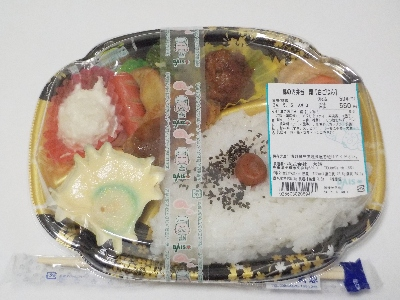
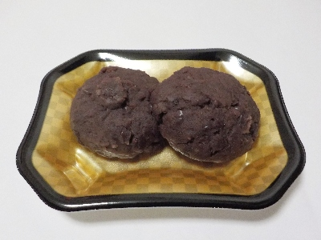
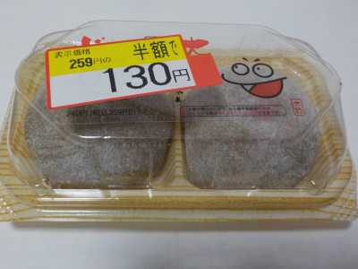
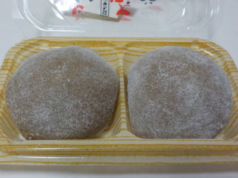

大惣の幕の内弁当。
2024/05/04

お惣菜系の幕の内弁当の中に、茶碗蒸しが入ったものがあるんですね。凄いな。
これは是非食べてみたいと買いました。
茶碗蒸しは汁がこぼれないよう固めてありますが、特に抵抗はなく普通に美味しかったです。
他にもいろいろおかずが入っていますが、それぞれしっかりとした味がって美味しくいただきました。
島根県出雲市高松町639-1
2024/05/04

お惣菜系の幕の内弁当の中に、茶碗蒸しが入ったものがあるんですね。凄いな。
これは是非食べてみたいと買いました。
茶碗蒸しは汁がこぼれないよう固めてありますが、特に抵抗はなく普通に美味しかったです。
他にもいろいろおかずが入っていますが、それぞれしっかりとした味がって美味しくいただきました。
2024/03/02

王将戦のおやつで話題になったおはぎです。
いい甘さのあんこが均等についていました。食感にムラがなくて美味しかったです。
この均等な感じは家庭では真似出来ないなと思いました。
2019/01/31

見た感じトチもちぽいものかと思って買ったんですが、中にはあんではなくカスタードクリームが入っていました。

ちょっと焼き芋っぽい感じのカスタードクリーム大福でした。
食後のデザートにいいかなと思いました。
色違いの商品もあったので、次はそっちも食べてみたいです。